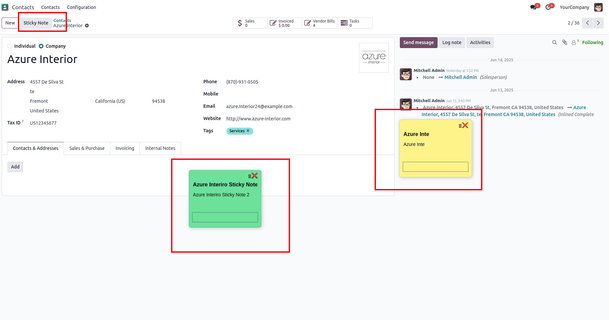

🧾 Sticky Notes on Any Record
This lightweight Odoo 18 module allows users to attach colorful sticky notes to any record directly from the form view.
✨ Features
- 🔘 Adds an "Add Sticky Note" button next to the "New" button in all form views.
- 🧷 Create sticky notes for individual records and individual users with title, description, and background color.
- 🎨 Custom color picker support to personalize each note.
- 🔄 Notes are saved per record and reloaded automatically.
📸 Screenshots

⚙️ Configuration
No configuration required. Just install and use!
📂 Technical
- Built using OWL (Odoo Web Library) in Odoo 18
- Uses form view inheritance and dynamic JavaScript injection
Created with ❤️ for productivity-focused Odoo users.
Support
For support or bug reports, please contact
- Gmail: dhrushilpatel2000@gmail.com
- Linkdin: www.linkedin.com/in/dhrushil-patel-72a42220a
- Whatsapp: (+91)9726198065